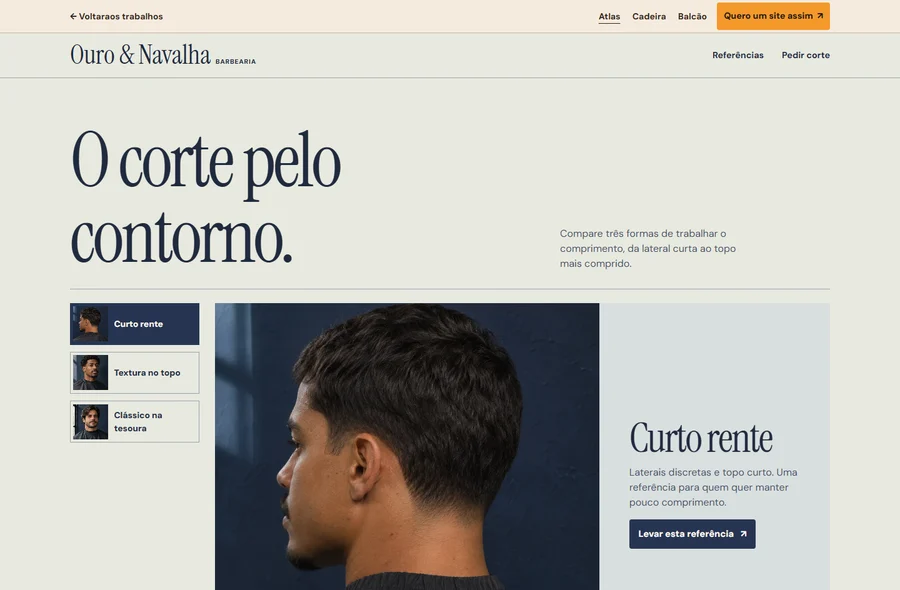
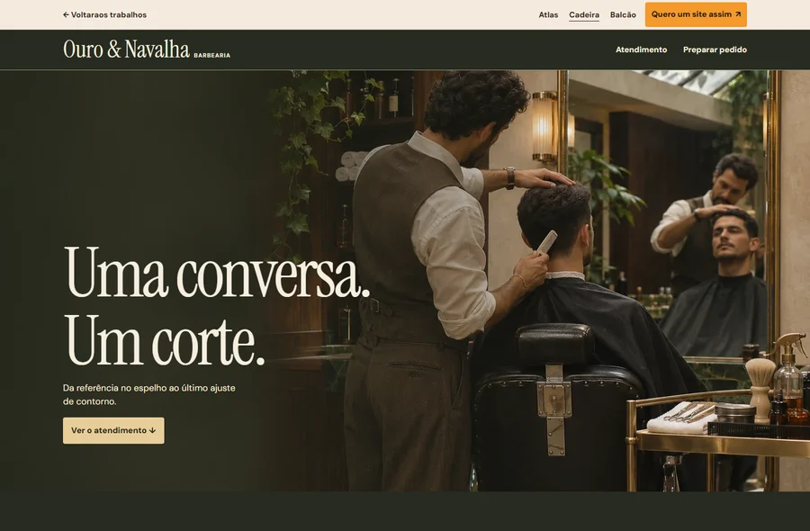
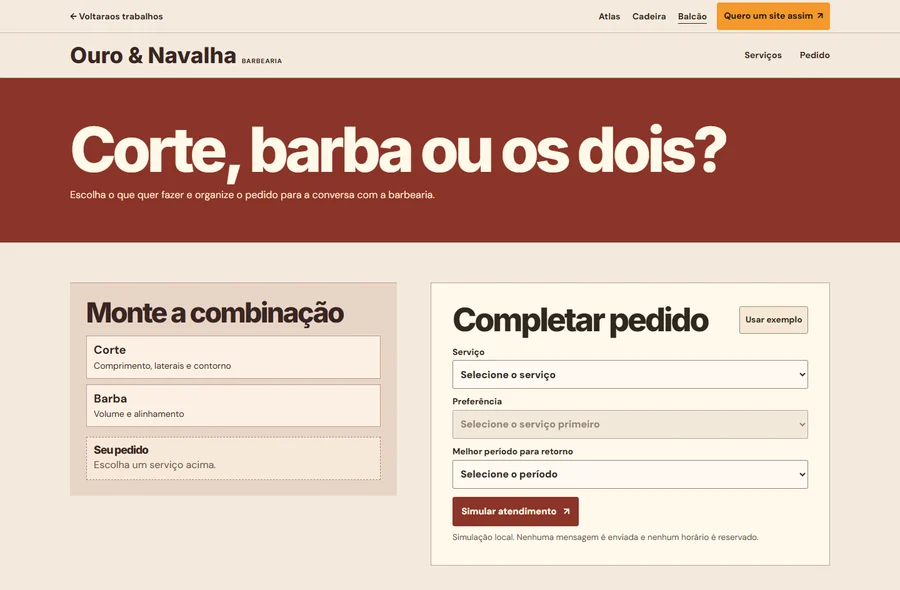

Três maneiras de conhecer a mesma barbearia.

Compare três cortes e leve a referência escolhida ao pedido.

Conheça o atendimento da conversa ao ajuste final no espelho.

Combine corte e barba em um pedido de teste.